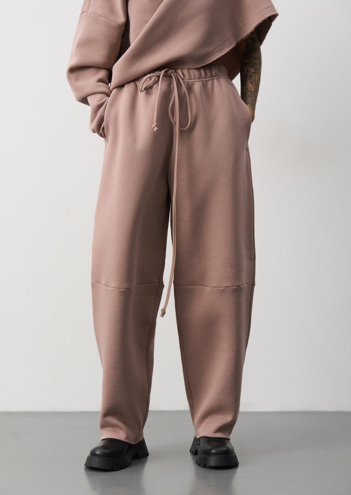
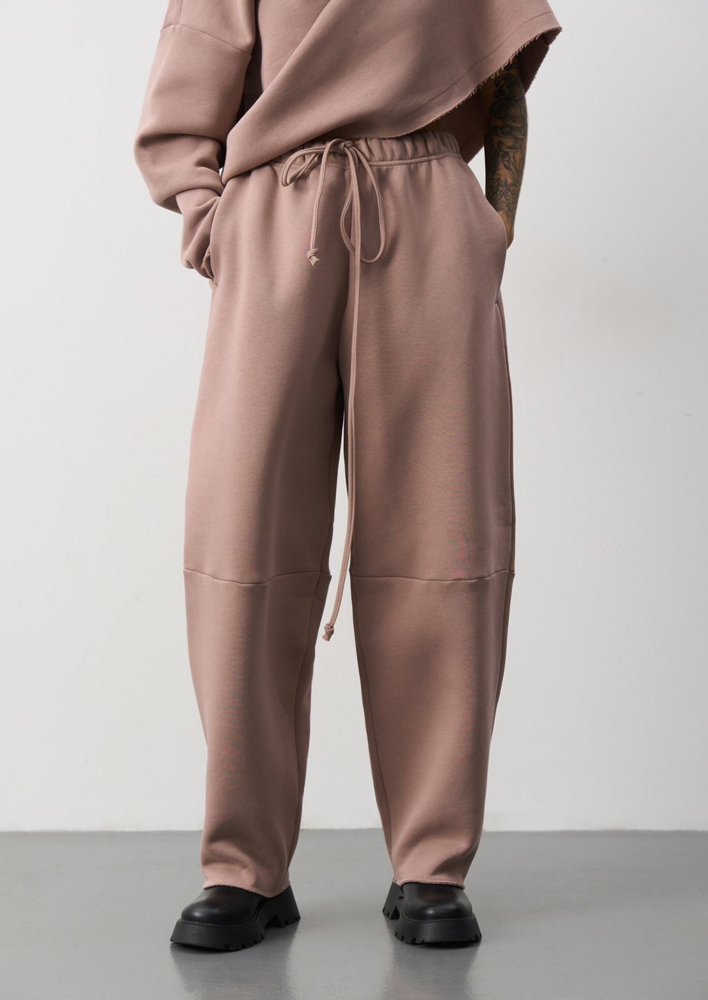
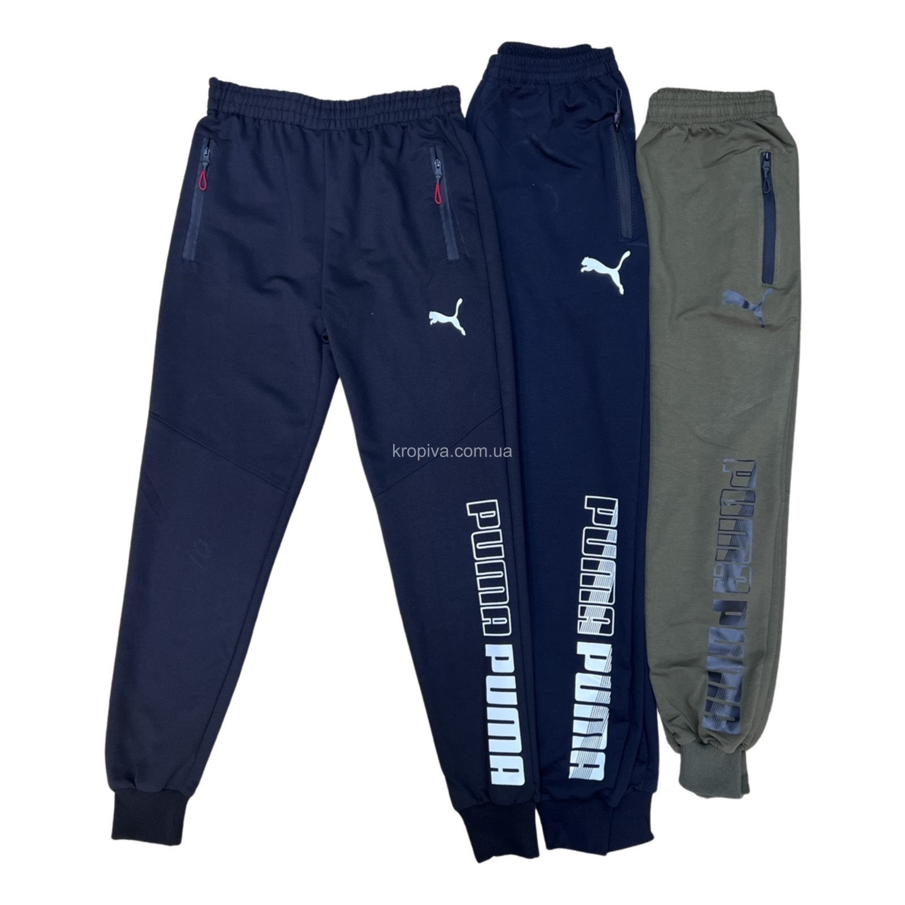
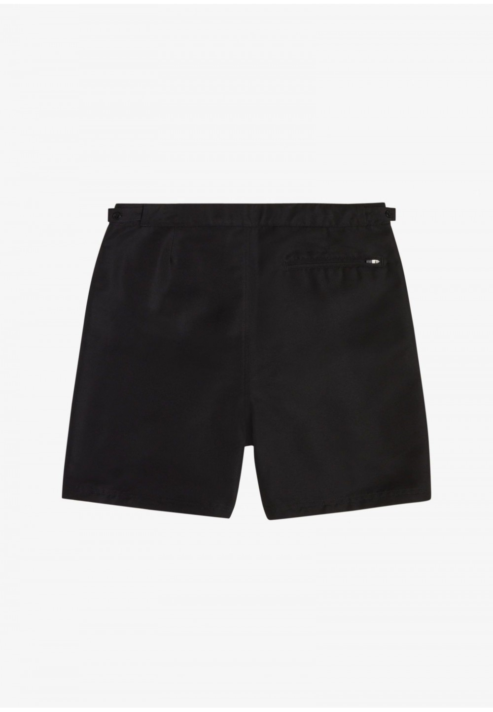
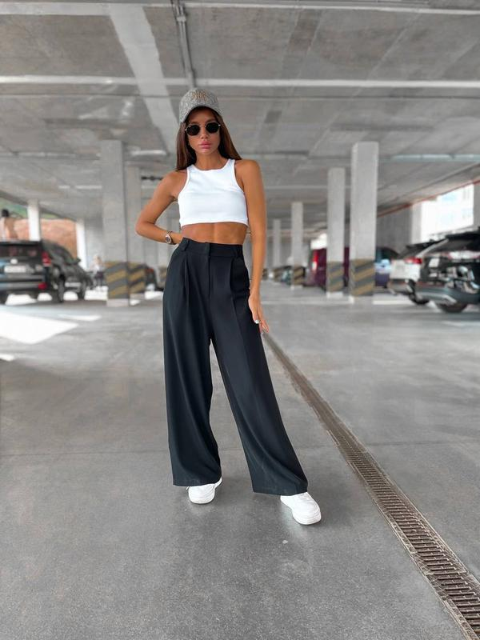

Штани Українського бренду
Штани — різновид верхнього одягу, який захищає ноги, сідниці, геніталії та низ живота. Складається з двох зшитих частин, що облягають ноги — холош чи штанин.
Різновиди штанів в магазині UkraineRog
- Джинси — штани, традиційно пошиті з цупкої бавовняної тканини, але також можуть бути виготовлені з будь-якої рубчатої тканини.
- Спортивні штани - більше орієнтовані на спорт, і мають особливі вимоги до матеріалу штанів.
- Шорти — різновид укорочених штанів.
- Mom jeans — фасон жіночих джинсів вільного крою із завищеною талією.
- Палаццо – це широкі брюки із завищеною або стандартною лінією талії
Чоловічі штани
Чоловічі штани є в нашому магазині тому пропоную завітати до мене. Джинси коштують-2000грн, спортивні штани коштують-1500грн, Шорти-900грн.
Жіночі штани
Жіночі штани також є в асортименті мого магазину. Джинси коштують-1900грн, Шорти-700грн, Спортивні штани-1200грн, Палаццо-2600грн.
 

Вигляд штанів:


